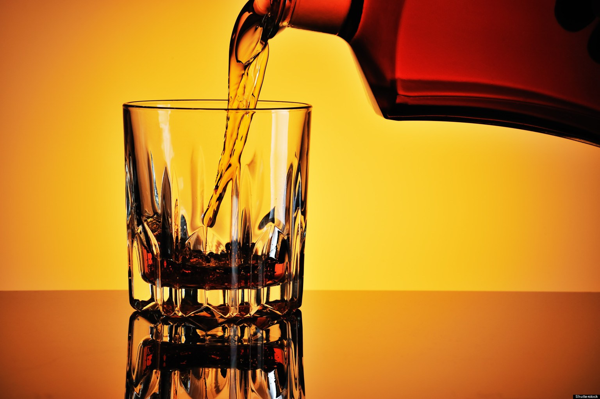

What is alcohol use disorder?
Alcohol use disorder is
when you have problems controlling your drinking, you feel worry when you don't drink it,
continue drinking it even if it causes you problems or having withdrawal
symptoms when you rapidly decrease or stop drinking. This disorder
includes any type of alcohol that puts your health and safety in risk,
or when you drink a lot of alcohol where a male consumes five or more
drinks within two hours or a female at least four drinks within two
hours.

Alcohol dependence
(alcoholism) is a disorder of compulsive drinking associated with impaired
control over intake, such as repeatedly exceeding self-defined limits,
a persistent desire to quit or cut down and difficulty doing so, and continued
use despite adverse consequences. (Upsatine, 2013)